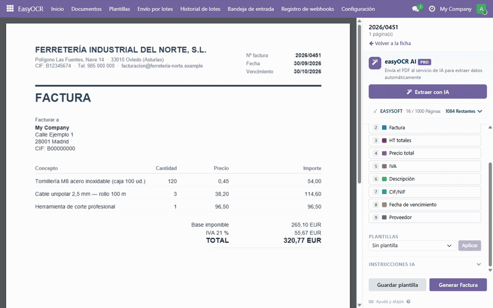
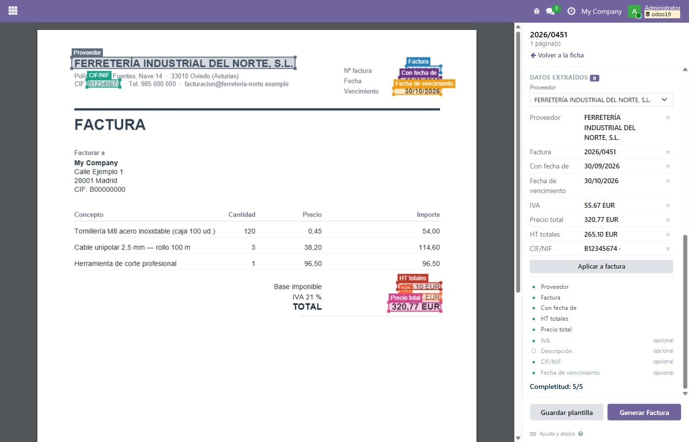
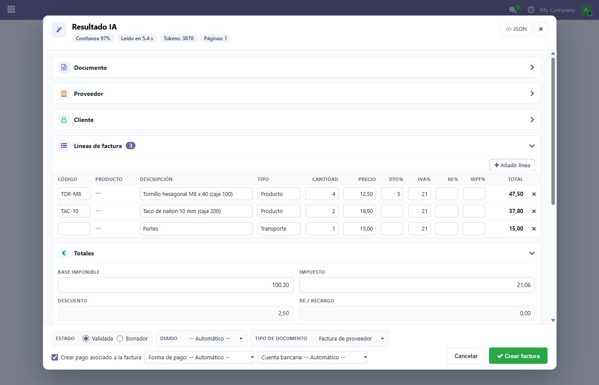
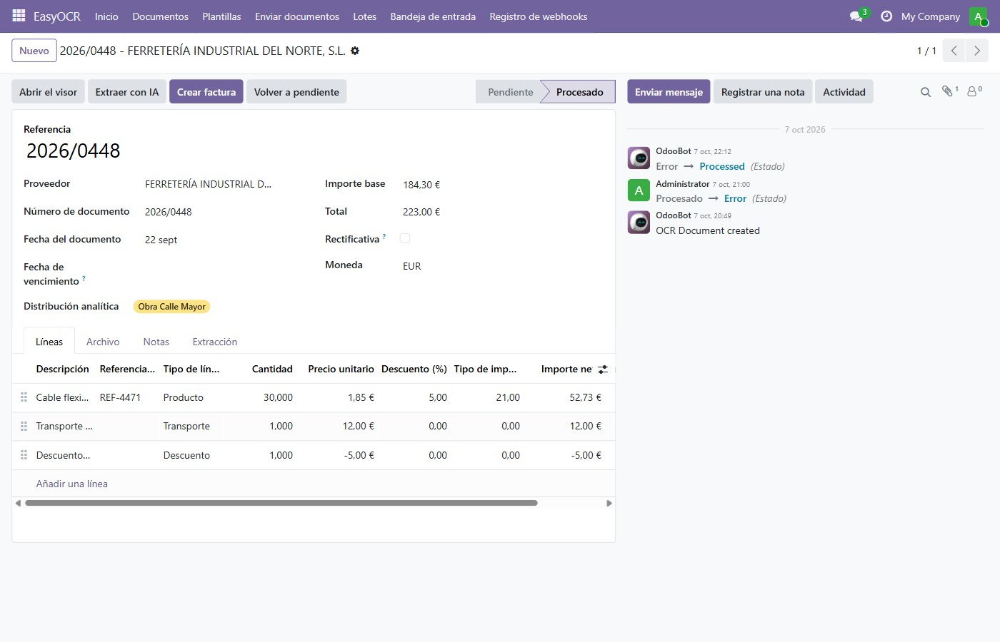
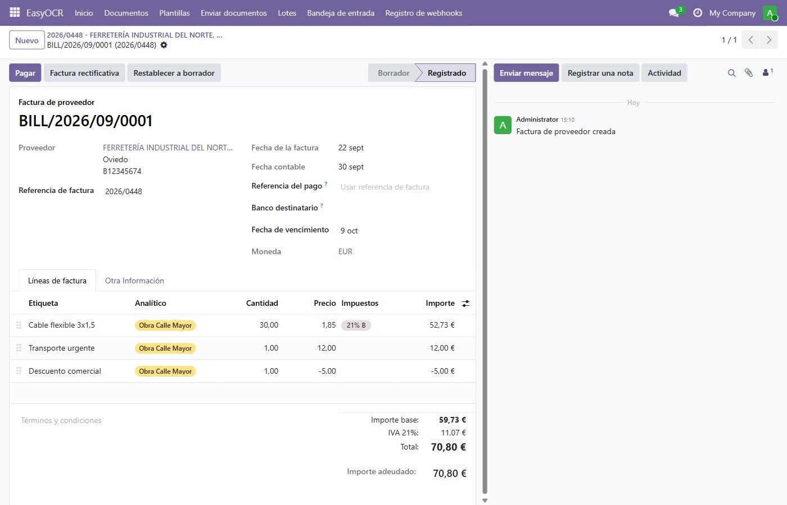
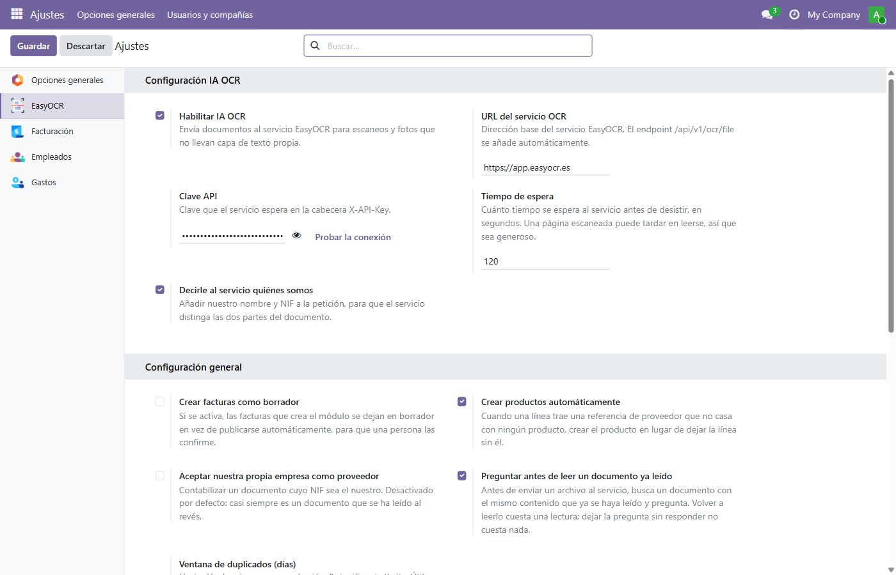

Drop a supplier invoice or an expense receipt and review what was read from it before it becomes an entry. The file stays on the screen the whole time, so a document that was read badly is corrected where it was read, and one that failed is sent again instead of being lost.

Three steps, from the file to the entry: the document opens in the viewer, each field is marked once over the text, and the bill is built from what was read.
The module is free and stays free. Install it, use it, and read all the documents you want.
A PDF that already carries its text is read inside your browser, with no service, no account and no cost. Most invoices that arrive by email are this.
Scans and photographs need the EasyOCR reading service: an address and an API key, typed once in the settings. The service works on a plan with a monthly page quota, plus a wallet balance for the pages you go past it. Nothing is charged for the module itself, and there is no surprise line on the bill: what is left of the month is shown on the same screen you read documents on.

The workbench: the document on the left, and on the right everything that can be done to it. Draw a rectangle over each field once and the text under it is read from the file itself, which costs nothing. Save the rectangles under that supplier and their next invoice opens with them already in place.
Supplier, tax number, document number, dates, totals and lines are read from the file, and shown for review and correction before any bill is made.
A supplier that sends the same layout every month only has to be set up once. The same fields are read from it again, so the review gets shorter over time.
One click turns the document into a supplier bill, with its lines and its taxes. The supplier is matched by tax number, or created from what was read. A credit note becomes a vendor credit note instead.
Drop a whole folder and let it run. Each document keeps its own state, so the ones that are ready can be turned into bills while the rest are still going.
The reading does not have to be watched: the service calls back when a document is ready, and every call is written down so you can see what came in, and when.
IVA, the equivalence surcharge and IRPF arrive on the lines, and a rectificativa becomes a vendor credit note with its entries the other way round.

The confidence and what it cost, one card per part of the document, the lines with their VAT, surcharge and withholding ready to correct, a warning when they do not add up, and the choice of draft or validated, journal and payment. From there, one button makes the bill.

The document keeps what was read, next to the fields it came from, so anything wrong is fixed here and not on the bill afterwards.

And the supplier bill, with one line per line read, its products, its discounts and its taxes.
The module is translated into Spanish, Catalan, Galician, German, French, Italian and Portuguese besides English, and the reading is returned in the language of the screen.

Sixteen switches over the service, over what a document becomes and over what a webhook may do on its own, and a button that checks your key without spending a reading.
It is listed here because finding it out afterwards is worse. A reading that fails is not lost either: the document keeps its state and the reason, and can be sent again.
1.0.12, 12 October 2026: the module is published on the Apps Store, with the repository laid out the way the store reads it. The list version by version is in the CHANGELOG of the repository.
Write to info@easysoft.es with your Odoo series, what you were doing, and the document if a reading went wrong. Made by EasySoft Tech S.L.